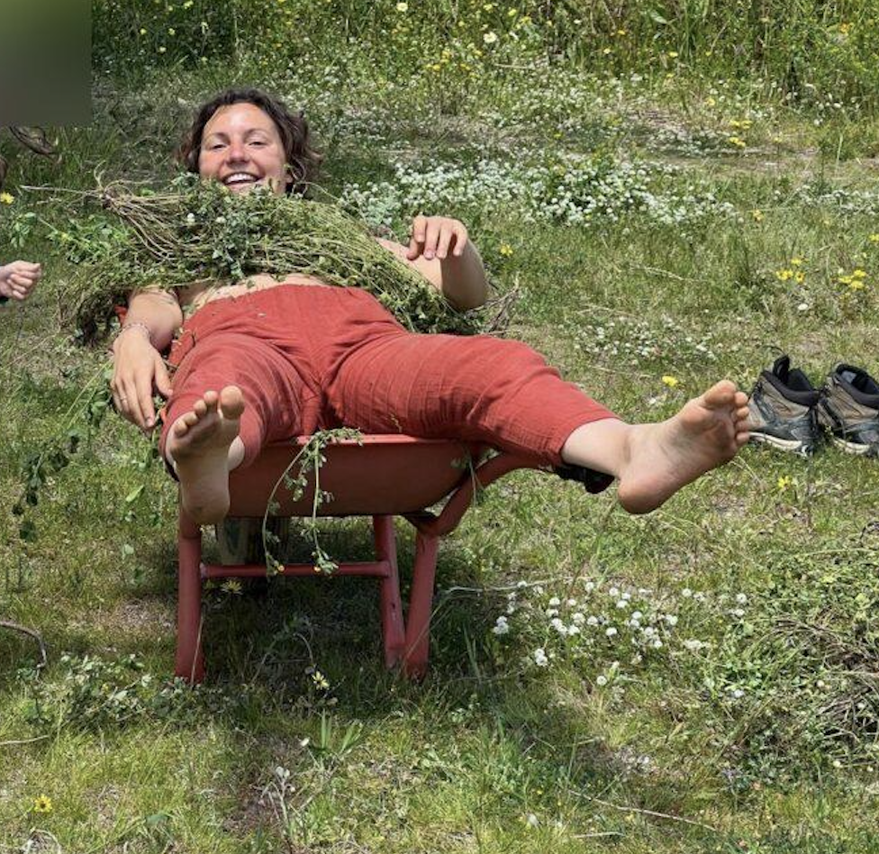
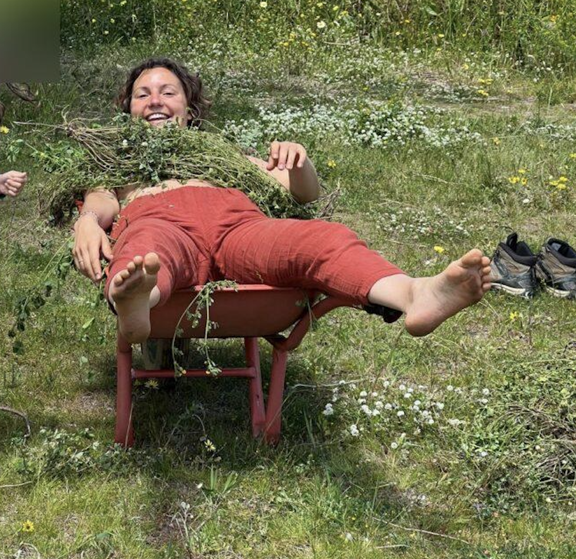

permaculture design certificate
a transformative 2-week training near lisbon
March 15–27, 2026
step into a new way of living, designing and relating to the world.
A permaculture design certificate (PDC) is the foundational training in permaculture, an approach for designing regenerative systems that work with nature.
Over 72+ hours of teaching, you'll learn to observe patterns, understand ecosystems, and design solutions for food, water, energy, shelter, and community. It's internationally recognised and offers both practical tools and a design framework that shifts how you see the world.
Whether you're transforming a balcony, designing a food forest, rethinking your lifestyle, or leading community projects, the PDC gives you the foundation to start.
 
